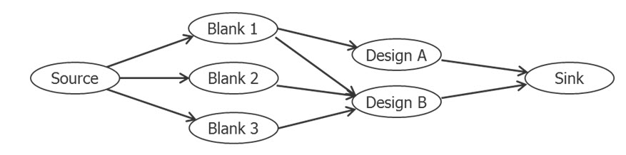
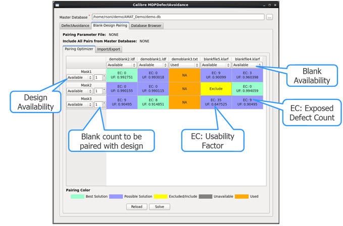
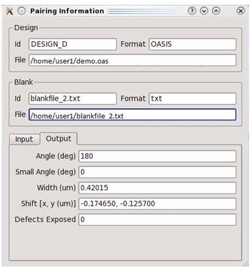
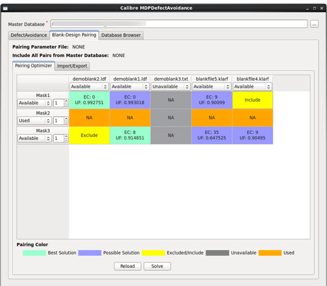
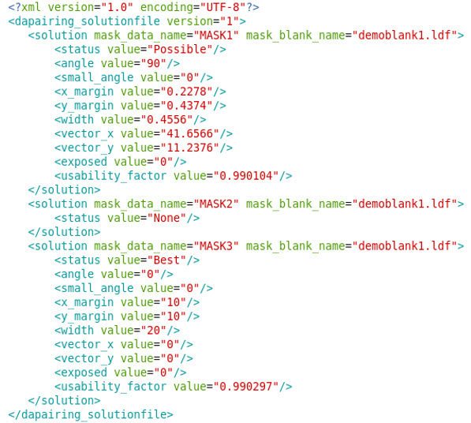

The Blank-Design
Pairing Optimizer maximizes the number of manufacturable masks given
the blanks and designs. Once the best solutions for individual blank-design
pairings have been determined using defect avoidance, optimization
across all blanks and designs can be performed using the Blank-Design
Pairing Optimizer. The optimizer uses the width of the solution
and exposed defects count as cost factors to compute the optimal
solution.
Figure 1 illustrates an example with three blanks
and two designs available for manufacturing.
Figure 1. Three Blanks and Two Designs
Optimization Problem
In this scenario, Design A can be manufactured
using Blank 1 and Design B can be manufactured using Blank 1, Blank
2 or Blank 3. However, using Blank 1 for Design B is not the optimal
solution because that leaves Design A without any suitable blank.
The optimizer makes sure that the solution found has a “flow” from
both Design A and Design B to the Sink node.
Prerequisites
Calibre
MDPDefectAvoidance has successfully made a defect avoidance run.
A
valid Blank-Design database must be selected and loaded into Calibre MDPDefectAvoidance
(see “Blank-Design Relational Database”).
Procedure
- Use one
of the following methods to invoke the pairing optimizer:
Using the Calibre MDPDefectAvoidance GUI:
- Invoke Calibre MDPDefectAvoidance
from Calibre MDPview (see “Calibre MDPDefectAvoidance Modes of Operation”).
- In the Calibre MDPDefectAvoidance
dialog box, click the Blank-Design
Pairing tab. There are two sub-tabs, Pairing Optimizer and Import/Export.
- Click the Pairing Optimizer tab. The Pairing Optimizer tab displays
the availability status of blanks and designs, as well as the exposed
defect counts and usability factor (UF).
- In
a command shell, use the following invocation syntax:
calibremdpv -a da optimize {database_file_name | -paramfile optimizer_parameter_file}
[-outputfile output_file_name]
where:
The database_file_name is
the SQLite database that contains the blank, design, and pairing
information from the defect avoidance run. The supported extensions are .db or .sqlite in
case-sensitive file names such as test1.db or test2.sqlite.
The -paramfile is
an XML file that specifies the options that are available in the GUI.
Examples include the status (Available, Unavailable, and Used) of
a blank or design, whether a blank-design pair should be considered
for pairing or not, and so on.
If the parameter file is not specified, the pairing run uses
the current state of the database (depending on the availability
of blanks and designs).
Using the “da optimize” argument, you can either specify the
database file name or optimizer parameter name, but not both. The
format of the pairing optimizer file is described in “Pairing Optimizer Parameter File Format”.
The -outputfile
is an optional keyword that specifies the name of an XML file in which
the pairing results are output. If -outputfile is not specified,
the results are written to standard output (console).
For example:
calibremdpv -a da optimize da.db
calibremdpv -a da optimize -paramfile \
optimizer_parameter.xml
calibremdpv -a da optimize da.db -outputfile out.xml \
calibremdpv -a da optimize -paramfile \
optimizer_parameter.xml -outputfile out.xml
- In GUI mode, the Pairing Optimizer tab displays
the availability status of blanks and designs, as well as the exposed
defect counts (EC) and usability factor (UF).
The
usability factor for a blank-design pair determines the usability
of the pair. The usability factor ranges between 0 and 1:
1— Specifies that the
blank-design pair is the best usable pair.
0 — Specifies that the
blank-design pair is not usable.
Some parameters used to compute
the usability factor are configured in the run configuration file,
including ConsiderExposedDefectsInUsabilityFactor, MaxSolutionWidthInMicrons,
and MaxExposedDefects. For details on configuration parameters,
refer to “Run Configuration File Format”.
The usability factor is not
computed if a pair is marked as excluded or left blank, or design
is marked as unavailable or used.
Figure 2. Blank-Design Pairing
Optimizer
Table 1 describes the design availability status
flags used in blank-design pairing.
Table 1. Blank-Design Pairing FlagsFlag
|
Description
|
|---|
Available
|
Blank and Design is available
to be considered for pairing.
|
Unavailable
|
Blank and Design is not
available for pairing.
|
Used
|
Blank and Design is already
used and cannot be paired with any Design and Blank in the future.
If you click Solve,
the corresponding row and column disappear from window.
|
- At any
point of time, the Pairing Optimizer displays pairs that are a subset
of those available in the Master Database. Click the Solve button
to invoke the pairing optimizer and click Reload to
load all the pairs from the Master Database. On clicking Reload,
the pair states from the Pairing Optimizer are retained.
Figure 3. Reload
and Solve Buttons
The addition and removal of blank, design or pairs in the Master
Database is indicated when the Reload button
is cyan color (as shown in the following figure). When you click Reload,
the corresponding blank, design, and pairs are loaded to or removed
from the pairing optimizer table.
Figure 4. Pairing
Optimizer Not Synchronized With Master DB
- To view the information of
a particular blank-design pair in the GUI, left-click on a corresponding
table cell. The Pairing Information dialog box appears.
Figure 5. Pairing Information
- To exclude or include a blank-design
pair for an optimal solution computation, right-click a corresponding
table cell. The “Include” or “Exclude” status of the cell indicates whether
the blank-design pair is excluded or included, respectively, for
an optimal solution computation. If a pair is excluded, the usability
factor is not computed for the pair.
Figure 6. Exclude or Include
a Blank-Design Pair
Results
If you are running the pairing optimizer in batch mode (also
if -outputfile has been specified), an output file is generated.
The pairing optimizer output contains the information about mask data
name, mask blank name, solution status, angle, small angle, x-margin,
y-margin, vector-x, vector-y, number of defects exposed, and the
usability factor for the blank-design pair.
The status value could be Best, Possible or None. If the status
value is None, then other attributes are not written to solution
structure as illustrated in the following figure:
Figure 7. Pairing
Optimizer Example Output